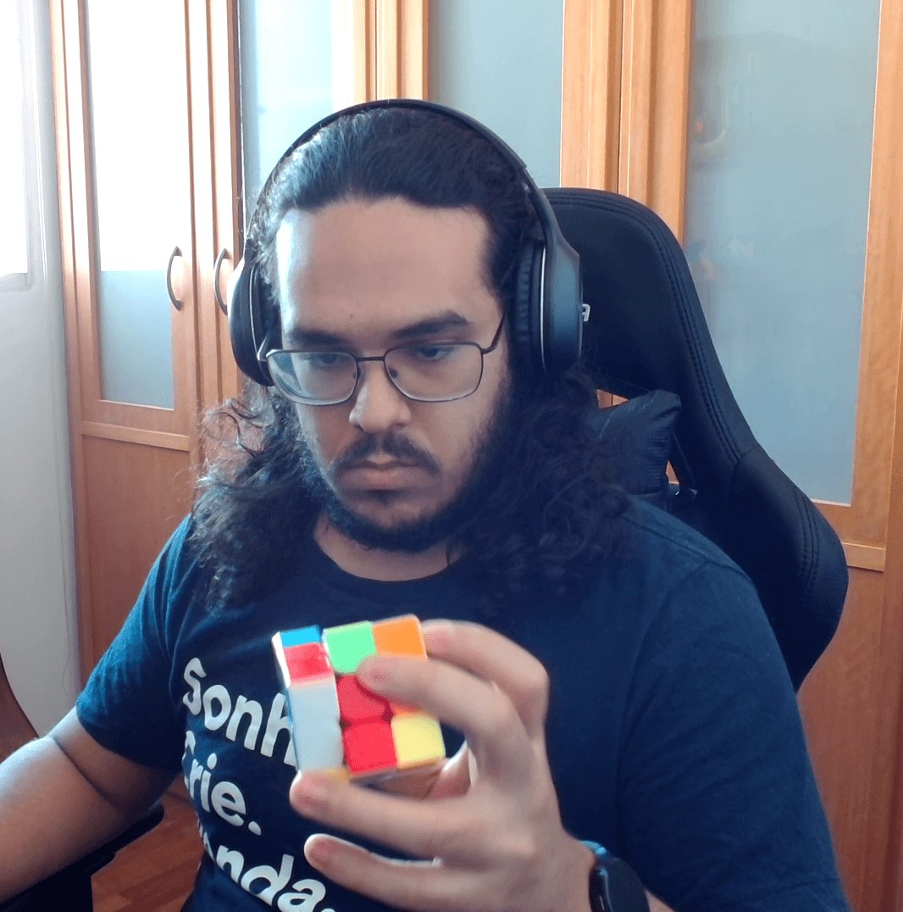

Bruno Damacena
Belo Horizonte, Minas Gerais, Brasil
Mineiro, 22 anos. Amante do cinema, da música e das nerdices. Estudante de Engenharia de Computação no CEFET-MG e Estagiário em Desenvolvimento Full Stack na bwtech.
Experiência Profissional
Estagiário em Desenvolvimento Full Stack
bwtech
Hoje, faço parte da equipe de desenvolvimento da bwtech, no time de QA e manutenção de código. Minha principal função é na manutenção em front-end e back-end de uma ferramenta de otimização de redes de telecomunicações, atuando na coleta, armazenamento e exibição de dados e relatórios.
Janeiro 2019 - Presente
Estagiário em Desenvolvimento Web
EuNeném.com
Durante um ano, fiz parte da equipe de desenvolvimento da startup EuNeném.com. Além de trabalhar com a manutenção do site e desenvolvimento de novos recursos, também auxiliei em ferramentas de conversão de leads.
Dezembro 2017 - Janeiro 2019
Monitoria
CEFET-MG
Durante dois semestres, fui monitor da disciplina Geometria Analítica e Álgebra Vetorial no CEFET-MG, dando suporte aos alunos e assistência a professora.
Fevereiro 2017 - Dezembro 2017
Formação Acadêmica
Centro Federal de Educação Tecnológica de Minas Gerais - CEFET-MG
Engenharia de Computação
Previsão de Conclusão: 2022
Agosto 2016 - Presente
Instituto Federal de Educação, Ciência e Tecnologia da Bahia - IFBA
Ensino Médio Completo
RA: 7.1/10
Fevereiro 2011 - Dezembro 2015
Habilidades
Linguagens de Programação & Ferramentas
Hobbies

Cubo Mágico
Desde dezembro de 2016, o cubo mágico tem sido um dos meus hobbies favoritos. Como sempre gostei de desafios, e sempre gostei de me superar, aprendi a resolver vários modelos diferentes do quebra-cabeça e desde então tenho treinado para reduzir o tempo de solução de cada um deles. Você pode ver o meu perfil na Associação Mundial de Cubo Mágico. Você também pode checar o meu programa que calcula o número de combinações possíveis do cubo!
Música
Desde a infância, música sempre foi uma grande paixão. Influenciado por meus pais, despertei o interesse em aprender música. Desde então, tenho aprendido por conta própria a tocar instrumentos. Hoje eu toco violão, guitarra, ukulele, cavaquinho, flauta e gaita. Também sou apaixonado por percussão, e sou chefe de naipe do tamborim na Bateria Infernal, bateria universitária do CEFET-MG.

Ciclismo
Outro hobby que mantenho desde a infância é o ciclismo, graças a meu pai, que me ensinou a pedalar. Hoje, mantenho o ciclismo como esporte de fim de semana, além de um meio de transporte. Você pode me seguir no Strava!
Cinema
O cinema também tem um fator importante na minha vida. Sou apaixonado por cinema e literatura, e sempre assisto um filme ou uma série no tempo livre. Dentre os gêneros, os meus favoritos são drama, distopia e ficção. Dentre as minhas obras favoritas estão Star Wars, Lord of the Rings, Back to the Future, Black Mirror, The Godfather e The Breakfast Club.
Jogos
Outra paixão de infância estimulada por meu pai são os jogos. Não só eletrônicos, mas também os de mesa e de tabuleiro. Dentre os meus jogos favoritos estão o D&D como jogo de mesa, Catan como jogo de tabuleiro, e a franquia The Legend of Zelda como eletrônico. Você pode me adicionar na Steam!
Cubo Mágico
Desde dezembro de 2016, o cubo mágico tem sido um dos meus hobbies favoritos. Como sempre gostei de desafios, e sempre gostei de me superar, aprendi a resolver vários modelos diferentes do quebra-cabeça e desde então tenho treinado para reduzir o tempo de solução de cada um deles. Você pode ver o meu perfil na Associação Mundial de Cubo Mágico. Você também pode checar o meu programa que calcula o número de combinações possíveis do cubo!
Música
Desde a infância, música sempre foi uma grande paixão. Influenciado por meus pais, despertei o interesse em aprender música. Desde então, tenho aprendido por conta própria a tocar instrumentos. Hoje eu toco violão, guitarra, ukulele, cavaquinho, flauta e gaita. Também sou apaixonado por percussão, e sou chefe de naipe do tamborim na Bateria Infernal, bateria universitária do CEFET-MG.
Ciclismo
Outro hobby que mantenho desde a infância é o ciclismo, graças a meu pai, que me ensinou a pedalar. Hoje, mantenho o ciclismo como esporte de fim de semana, além de um meio de transporte. Você pode me seguir no Strava!
Cinema
O cinema também tem um fator importante na minha vida. Sou apaixonado por cinema e literatura, e sempre assisto um filme ou uma série no tempo livre. Dentre os gêneros, os meus favoritos são drama, distopia e ficção. Dentre as minhas obras favoritas estão Star Wars, Lord of the Rings, Back to the Future, Black Mirror, The Godfather e The Breakfast Club.
Jogos
Outra paixão de infância estimulada por meu pai são os jogos. Não só eletrônicos, mas também os de mesa e de tabuleiro. Dentre os meus jogos favoritos estão o D&D como jogo de mesa, Catan como jogo de tabuleiro, e a franquia The Legend of Zelda como eletrônico. Você pode me adicionar na Steam!
Projetos Pessoais
- Trabalho Final da Disciplina de Jogos Digitais, feito em dupla com Ramon Griffo com o objetivo de desenvolver um jogo cyberpunk de Puzzles em Primeira Pessoa
- Trabalho Prático da Disciplina de Linguagens de Programação com o objetivo de desenvolver um interpretador para uma nova linguagem de programação que embute ideias de programação orientada a objetos, a SmallOO
- Jogo desenvolvido com Gabriel Dutra em Linguagem C e OpenGL, visando o aprendizado de Computação Gráfica
- Projeto para fins de estudo de sintaxe de OpenGL que visou desenhar na tela do usuário a capa do oitavo disco da banda britânica de rock progressivo Pink Floyd, Dark Side of the Moon
- Trabalho prático de Algoritmos e Estrutura de Dados que visa estudar e entender os Paradigmas de Programação e Problemas NP-Completo
Conquistas
- Vice Campeão nos Jogos Escolares da Bahia 2008 Modalidade: Xadrez Masculino Júnior
- Finalista da Copa Inova Minas Fapemig 2017 Modalidade: Cubo Mágico 4x4x4
- Finalista da CEFET-MG UAI Bits Open 2017 Modalidade: Cubo Mágico 5x5x5
- Finalista do II Mineirim Open 2019 Modalidade: Cubo Mágico 3x3x3
- Finalista do II Mineirim Open 2019 Modalidade: Rubik's Clock